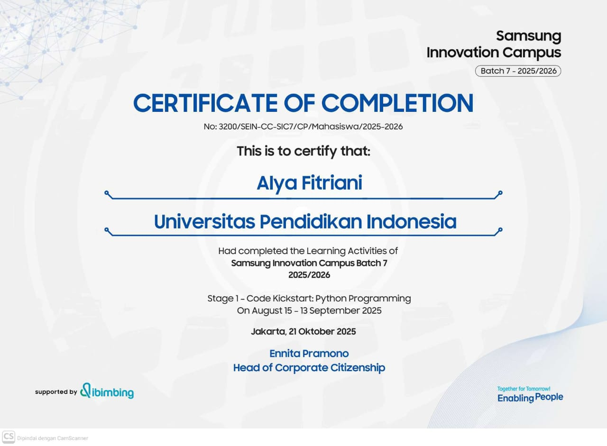
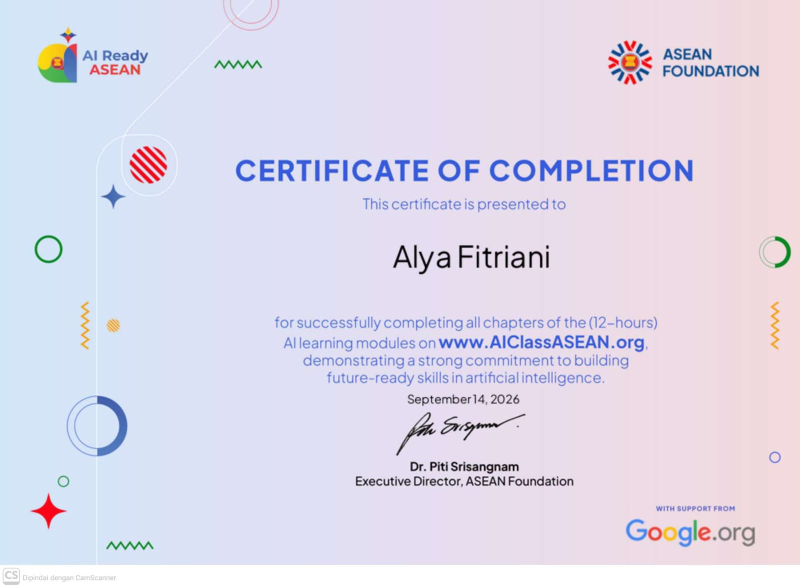
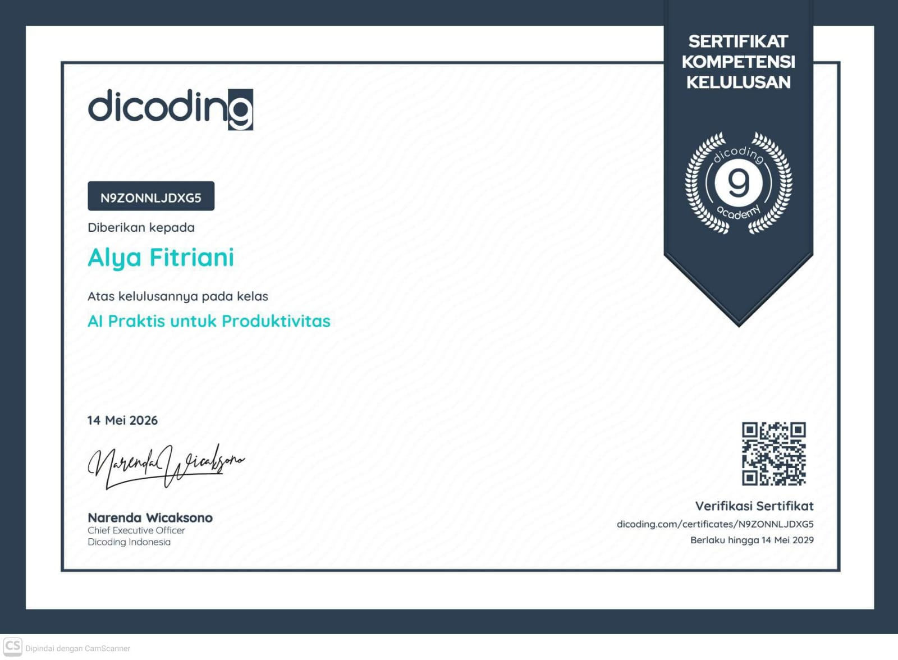
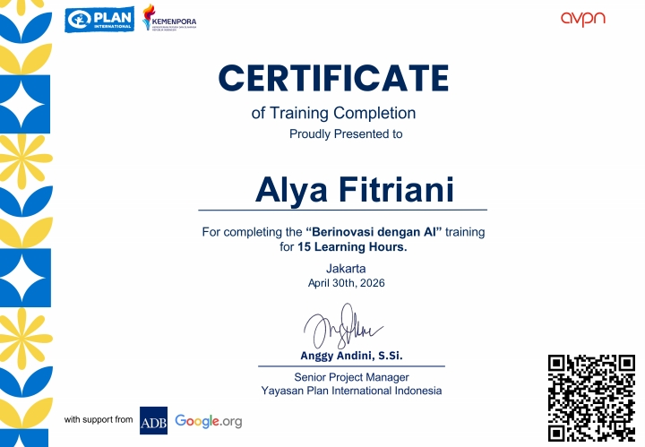
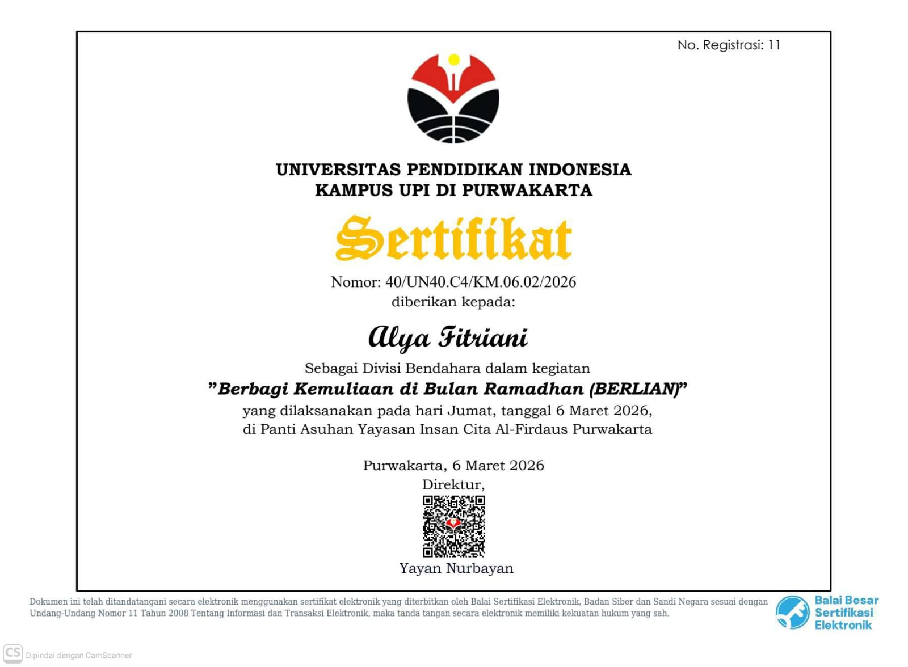
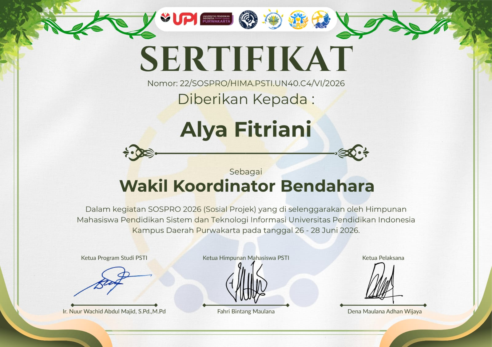
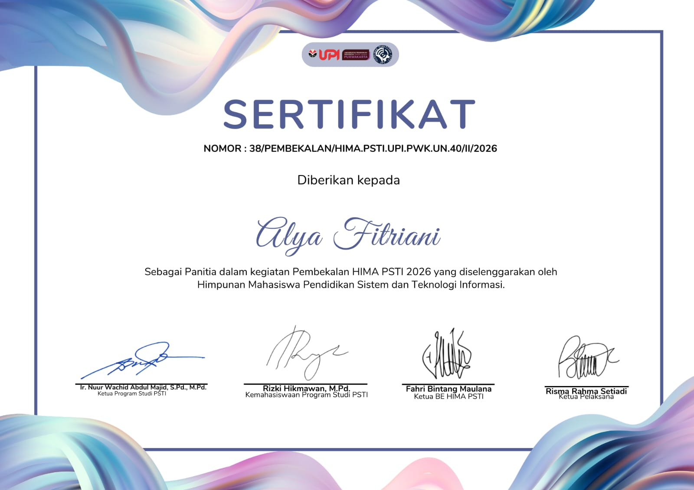
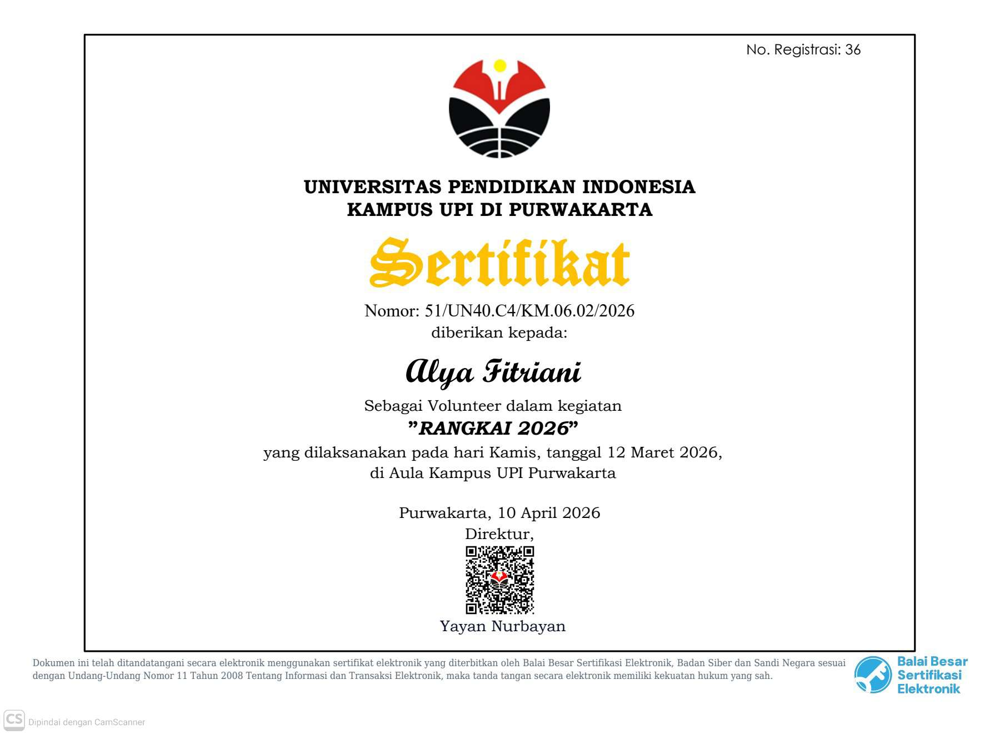
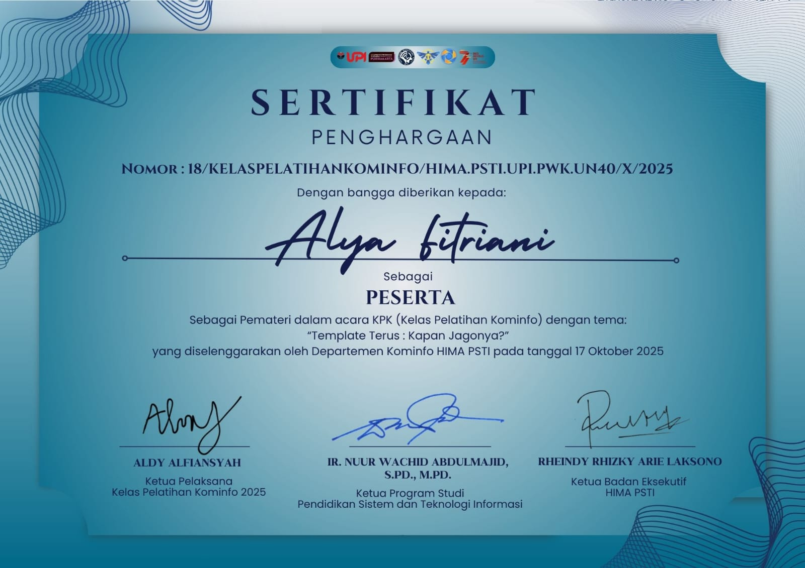

Berikut adalah beberapa sertifikat yang telah saya dapatkan.

Saya memperoleh sertifikat Samsung Innovation Campus (SIC) sebelum memasuki dunia perkuliahan. Pengalaman ini menjadi pencapaian pertama saya dalam bidang teknologi dan inovasi, sekaligus menjadi langkah awal untuk mengembangkan kemampuan dalam berpikir kreatif, memecahkan masalah, dan memanfaatkan teknologi untuk membuat solusi.
Pengalaman tersebut juga semakin mendorong saya untuk terus belajar dan mengembangkan diri di bidang Sistem dan Teknologi Informasi.

Saya memperoleh sertifikat AI Class ASEAN sebagai salah satu pengalaman belajar dalam memahami dasar-dasar Artificial Intelligence (AI) dan penerapannya dalam kehidupan sehari-hari. Melalui kegiatan ini, saya mendapatkan wawasan baru mengenai perkembangan teknologi AI serta bagaimana teknologi tersebut dapat dimanfaatkan secara kreatif dan inovatif.
Pengalaman ini menjadi bagian dari proses saya dalam memperluas pengetahuan dan keterampilan di bidang teknologi.

Mengikuti pembelajaran di Dicoding menjadi salah satu pengalaman yang membuat saya lebih dekat dengan dunia pemrograman dan teknologi.
Saya belajar memahami materi melalui berbagai latihan dan praktik, sehingga tidak hanya sekadar mengetahui teori, tetapi juga mencoba menerapkannya secara langsung.
Dari sini, saya mulai lebih terbiasa berpikir secara logis, mencari solusi ketika menemukan kendala, dan belajar secara mandiri. Pengalaman ini menjadi salah satu langkah saya untuk terus mengembangkan kemampuan di bidang Sistem dan Teknologi Informasi.

Saya senang bisa mengikuti pelatihan Berinovasi dengan AI yang memberikan pengalaman baru dalam memahami dan memanfaatkan teknologi Artificial Intelligence. Melalui pelatihan ini, saya tidak hanya belajar mengenal perkembangan AI, tetapi juga mendapatkan wawasan tentang bagaimana AI dapat digunakan secara kreatif, inovatif, dan bijak untuk membantu menyelesaikan berbagai kebutuhan di kehidupan sehari-hari maupun di bidang teknologi.

Saya berkesempatan menjadi Koordinator Bendahara dalam kegiatan Berlian, dengan mengelola kebutuhan keuangan, menyusun anggaran, serta mengoordinasikan tim bendahara agar administrasi dan penggunaan dana berjalan tertib dan transparan. Pengalaman ini membantu saya mengembangkan kemampuan dalam koordinasi, ketelitian, komunikasi, dan pengelolaan keuangan kegiatan.

Berperan sebagai Wakil Koordinator Bendahara dalam kegiatan Sospro, dengan tanggung jawab membantu mengelola administrasi dan keuangan kegiatan, berkoordinasi dalam penyusunan anggaran, serta memastikan kebutuhan dana selama kegiatan dapat dikelola dengan tertib dan transparan. Pengalaman ini melatih saya dalam bekerja sama, berkomunikasi, dan bertanggung jawab terhadap tugas dalam tim.

Saya senang bisa menjadi bagian dari kepanitiaan Pembekalan HIMA PSTI 2026. Melalui pengalaman ini, saya belajar bekerja sama dalam tim, berkoordinasi dengan berbagai pihak, serta ikut berkontribusi dalam mempersiapkan kegiatan agar berjalan dengan baik. Pengalaman ini menjadi kesempatan bagi saya untuk mengembangkan kemampuan komunikasi, tanggung jawab, dan kerja sama.

Saya senang bisa berkesempatan menjadi volunteer dalam kegiatan Rangkai. Pengalaman ini memberikan saya kesempatan untuk terlibat langsung dalam kegiatan sosial, bekerja sama dengan tim, dan belajar berkontribusi melalui hal-hal sederhana yang memberikan manfaat bagi orang lain.

Saya senang bisa mengikuti kelas pelatihan Kominfo yang memberikan saya kesempatan untuk menambah wawasan dan mengembangkan keterampilan di bidang teknologi digital. Pelatihan ini menjadi pengalaman berharga untuk terus belajar, beradaptasi, dan meningkatkan kemampuan yang relevan dengan perkembangan teknologi.